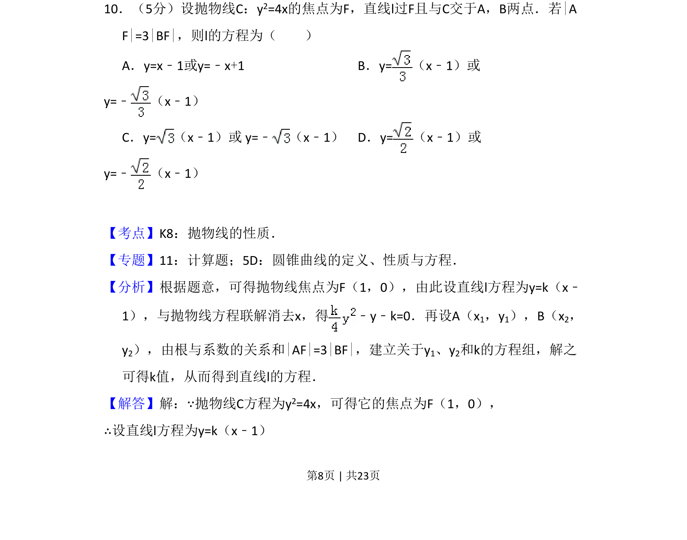
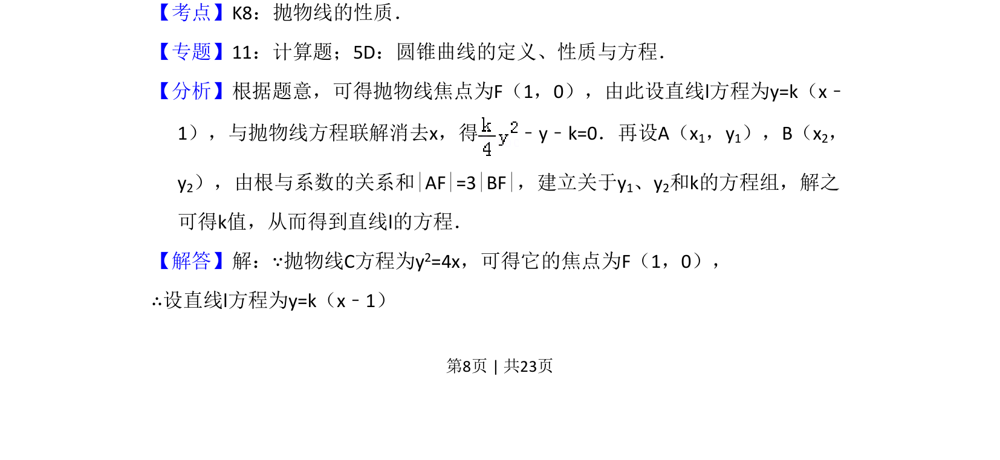
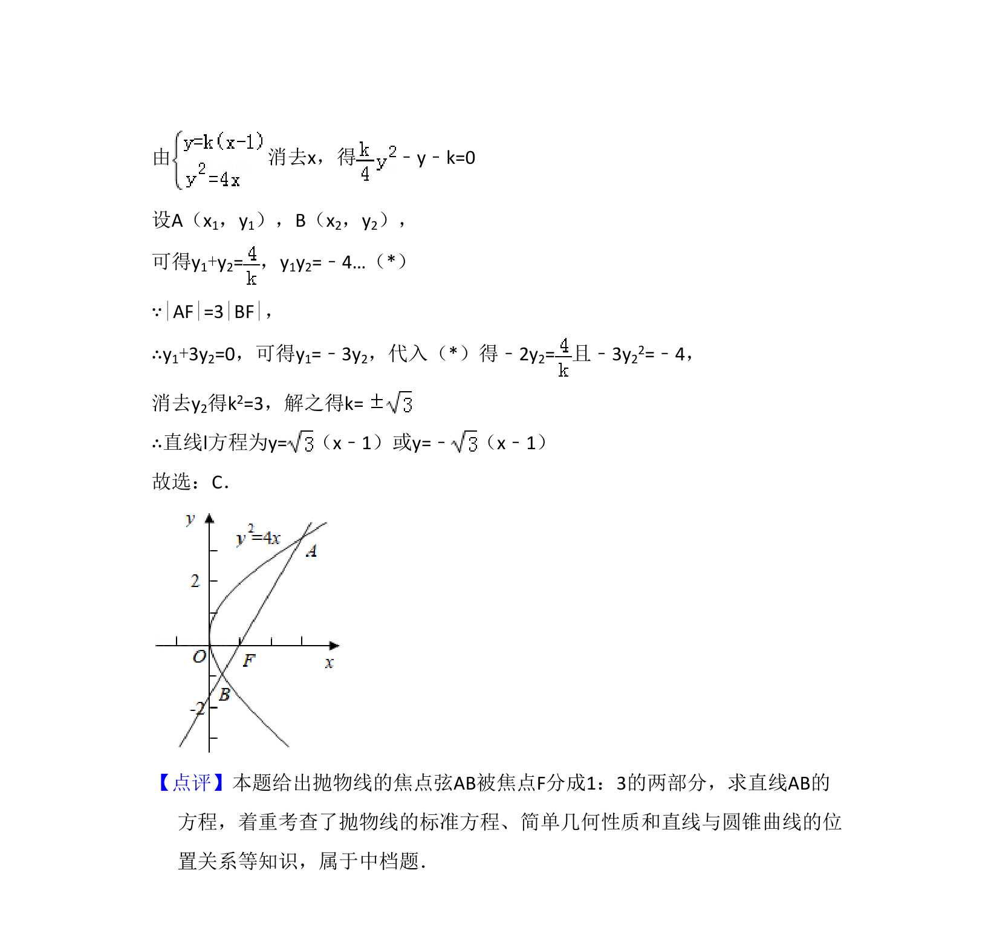

考点：抛物线性质 直线与圆锥曲线位置关系 韦达定理 弦长关系

本题考查抛物线焦点弦性质，通过直线与抛物线联立，利用弦长比例关系求解直线方程。


📄 原 PDF 第 8 页：
素材/真题/吉林/2008-2024·（吉林）数学高考真题/2013年高考数学试卷（文）（新课标Ⅱ）（解析卷）.pdf
10．（5分）设抛物线C：y2=4x的焦点为F，直线l过F且与C交于A，B两点．若|A F|=3|BF|，则l的方程为（ ） A．y=x﹣1或y=﹣x+1 B．y=（x﹣1）或 y=﹣ （x﹣1） C．y=（x﹣1）或 y=﹣ （x﹣1）D．y=（x﹣1）或 y=﹣ （x﹣1）
【考点】K8：抛物线的性质．菁优网版权所有 【专题】11：计算题；5D：圆锥曲线的定义、性质与方程． 【分析】根据题意，可得抛物线焦点为F（1，0），由此设直线l方程为y=k（x﹣ 1），与抛物线方程联解消去x，得 ﹣y﹣k=0．再设A（x 1，y1），B（x2， y2），由根与系数的关系和|AF|=3|BF|，建立关于y1、y2和k的方程组，解之 可得k值，从而得到直线l的方程． 【解答】解：∵抛物线C方程为y2=4x，可得它的焦点为F（1，0）， ∴设直线l方程为y=k（x﹣1）